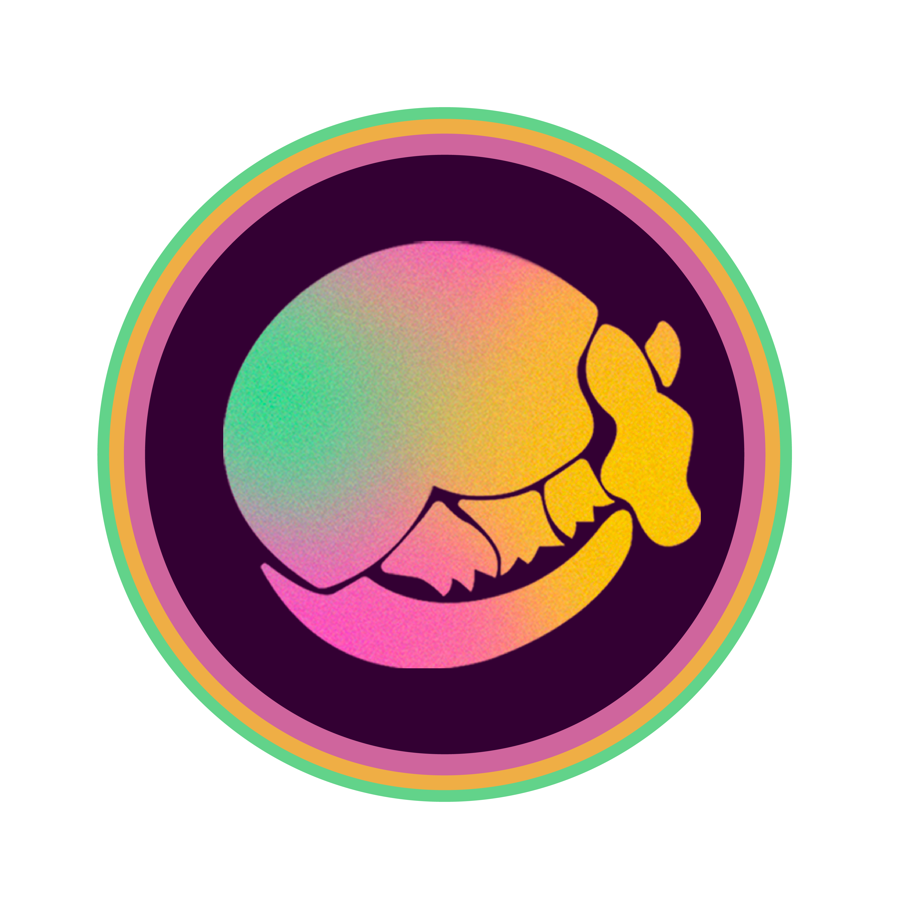
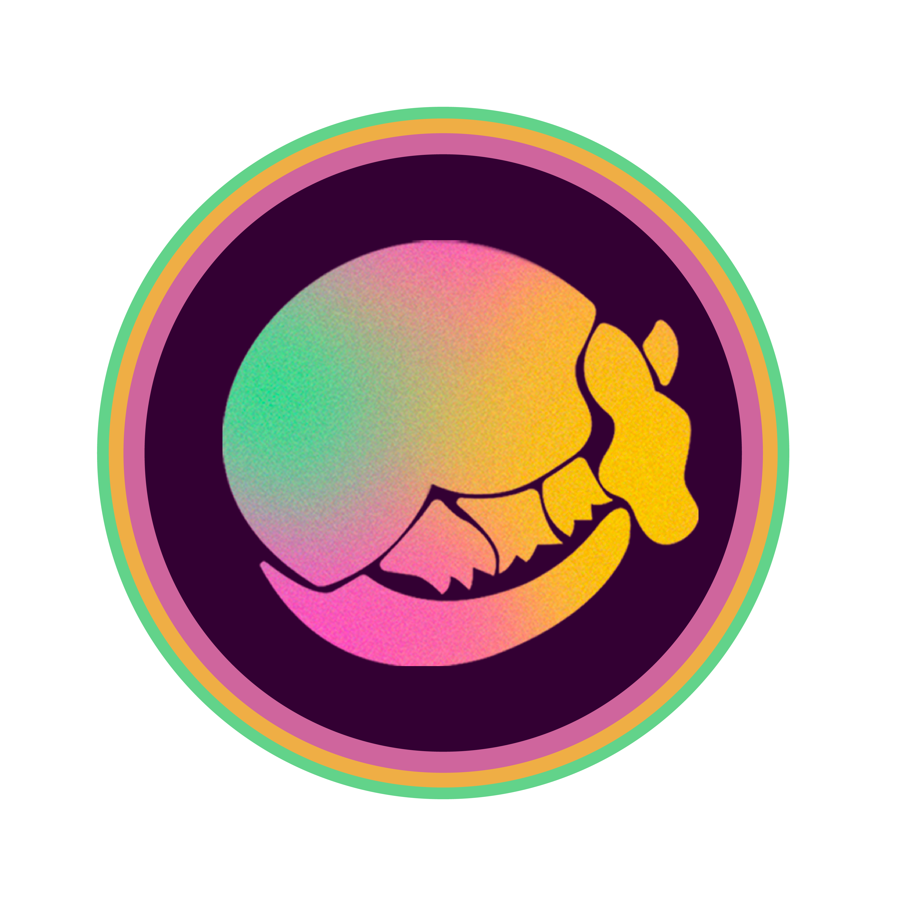

Mayfest Productions
Project Management, Brand Strategy, Graphic Design
Website Splash Page Design c/o Geena Vetula
As Co-Director of Promotions, I manage the creation and distribution of all festival promotional material for the nation's largest student-run music festival. I manage deadlines for deliverables & delegate projects to pairs and groups of designers / strategists within our team of 12, leading the creation of a theme-specific brand identity, managing social media strategy across three platforms, and overseeing campaigns such as artist announcements in accordance with artist and sponsor contracts.
Upon joining the team, I originally worked on designing original graphics for distribution. These include performance schedules, wristbands, stickers, tent banners, and theme announcement campaigns (see Promotional Designs).
Projects & Initiatives
Brand Book
Solution
Ensure consistency across promotional materials by creating a guidebook for brand standards, in accordance with the team's theme selection. Document this process and key metrics to streamline future branding work.
Process
My co-chair and I led the theme selection process for Dillo 2023 by designing a new ideation process, beginning with a team review of historic successes and obstacles and creation of benchmark standards. We aimed to increase allowance for creative freedom for designers and consideration of day-of programming. I worked with designer Defne Deda to create a brand standards guidebook to be used for all promotional materials for the 2023 festival.
Outcome
The brand style was rolled out in conjunction with a theme announcement campaign that brought record engagement. Teammates enjoy the illustrative freedoms the style allows, as was the intent with many new recruits being Procreate proficient.
Alumni Relations
Solution
Demonstrate why Mayfest should be considered a pre-professional organization to increase access to career opportunities for members and make direct alumni donations permissable.
Process
A 12-person cross-committee team met regularly to accomplish this goal. I created a logo slide by finding alumni who worked in music & entertainment. Discovering redundancy in the team's work, I took initiative in creating an alumni database tracking Mayfest members' trajectories since graduation for every class since 2010 (Excel). I then created a case study for the c/o 2010-11, seeing that 87% and 57% of Bookings and Productions, respectively, found careers here.
Outcome
An 18-slide pitch deck covering organizational structure, existing pre-professional opportunities, budgetary analyses / needs / inflationary pressures, alumni & industry testimonials, and more.
Recruitment 2022
Goal
Recruit talent to Mayfest at large while compensating for a ~30% drop in organization size and 50% drop in Promotions' size due to a disproportionately large graduating class.
Process
"Apply To Mayfest" flyers were hung in strategic locations around campus. I created a simplistic high-contrast design to prevent the flyer from getting lost in the noise of the many other informational posters placed on clipboards. Catherine Duncan and I devised a week-long committee highlight campaign to put a face to Mayfest and to give prospective members an idea of what team might be a good fit, soliciting 1-3 minute videos from each head of 10 committees and culminating in a Q&A with our co-presidents. I also designed social media content to provide reminders about application deadlines.
Outcome
With a healthy applicant pool to pull from, the exec board more than compensated for senior losses and created an entirely new committee (Community) in the process. Promotions doubled in size.
Promotional Designs
2022
Theme: Return of the Rodeo


 
